La persistencia de la cultura nahua
La cultura indígena persistió a lo largo del periodo colonial, aunque los nahuas experimentaron enfermedades mortales para las cuales no tenían inmunidad, trabajo forzado, impuestos, conversión a una religión desconocida y explotación de sus recursos por parte de los invasores y sus descendientes. La retención del liderazgo nativo en las comunidades indígenas, las cuales generalmente permanecieron intactas, fomentó una identidad colectiva dentro de la comunidad a pesar de estos cambios. Los indígenas utilizaron el sistema legal importado de España y eran litigantes agresivos. El náhuatl escrito y hablado fortaleció más la unidad y continuidad cultural. Formas de escritura pictográfica persistieron, aunque su uso disminuyó con el pasar el tiempo.
Los documentos que sobreviven de este periodo hablan de familias, herencia, disputas y derechos de la mujer a la propiedad. Los mapas se centran en la litigación por parte de las comunidades indígenas que defendían sus tierras de cultivo del ganado dañino, la apropiación inescrupulosa del terreno y el desvío de las aguas de regadío. Otros materiales tratan de disputas de terrenos entre comunidades indígenas. El matrimonio, la muerte y los tributos se encuentran representados, como también lo están los relatos de los sabios nativos acerca de su historia, ascendencia, religión, y la afirmación del derecho a la tierra basado en la memoria ancestral y las necesidades territoriales del momento.
Testamentos y disputas familiares
Al menos la mitad de todos los documentos nahuas existentes de la colonia (pictográficos y alfabéticos) son testamentos que legaban propiedad y bienes a sus herederos. Los testamentos pictográficos de Don Miguel Damián muestran dos diferentes maneras en que los documentos se hacían. Entonces, al igual que ahora, había también disputas legales acerca de la disposición de propiedades familiares como en el caso del litigio entre Juliana Tlaco y su nuera Pedronilla Francisca Tenuch. Además de los tres documentos pictográficos de la colección de la Newberry, dos documentos en escritura alfabética han sobrevivido (Archivo General de la Nación, México). Todas las familias representadas eran del distrito de Xochimilco, en las afueras de la Ciudad de México
Newberry Library: Vault oversize Ayer MS 1900
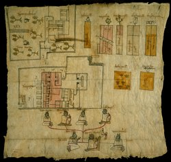Don Miguel Damián está sentado, muerto con sus ojos cerrados, en una silla de paja. Su condición noble está indicada por la corona detrás de su silla. Doña Ana, su primera esposa muerta está frente a él. Doña Ysabel, su segunda esposa sobreviviente (de un año), está detrás de él. Los cuatro hijos de Don Miguel están arriba de él: Doña María, Don Gaspar, Doña Vaula [Baula, Paula], y Don Francisco Damián. Los nombres de los herederos están escritos en las propiedades heredadas que incluyen huertas, edificios y tierras.
Newberry Library: Ayer 507 .B6 1891

Don Miguel Damián, muerto y envuelto en una mortaja, está en la parte superior izquierda en esta lista de sus bienes y herederos. Círculos con cruces representan dinero (“xv ps°” [pesos]) donado a la iglesia para misas y oraciones hechas a su nombre. Doña Ysabel, su segunda esposa sobreviviente y su herencia aparecen en la segunda banda. Siguen los hijos de Don Miguel: Don Gaspar, Don Francisco, Doña Baula (la página está rota y su imagen perdida) y Doña María. El orden de distribución de los bienes en la lista sigue el de documentos alfabéticos.
Newberry Library: Vault oversize Ayer MS 1902

Esta genealogía pictográfica identifica los personajes principales en la litigación de la propiedad entre Pedronilla y su suegra, Juliana. Las volutas de la palabra indican a los personajes centrales y los rostros oscuros indican a los muertos. Pedronilla (nombrada en el centro arriba) y su marido muerto Constantino (nombrado a la derecha) son dos descendientes del mismo patriarca familiar no identificado; su pequeño hijo muerto Felipe está representado entre sus padres. La madre de Constantino, Juliana, está a la derecha. Una casa (dibujada a la derecha) que le pertenecía a los padres de Juliana está entre las propiedades en disputa.
Newberry Library: Vault oversize Ayer MS 1901

Este documento registra la casa, tierras, cobijas, ropa, tazas de chocolate, y otros bienes que Pedronilla reclama haber heredado de su marido muerto, Constantino. Su nombre aparece tres veces al lado de la propiedad a la que se le conecta con líneas negras o rojas para indicar que le pertenece. Ella le cede solamente la casa superior y el terreno a su suegra, Juliana. No obstante, los reclamos de Pedronilla no concuerdan con el testamento escrito en náhuatl de su esposo, el cual se conserva en el Archivo General de la Nación, México.
Newberry Library: Ayer 507 .B6 1891

El documento representando los reclamos de Juliana combina la genealogía con la representación de los artículos en disputa. Juliana aparece en la parte superior derecha seguida por su esposo muerto, hijo y nieto; Pedronilla está vinculada solamente con su hijo.
En el testimonio que se conserva en el Archivo General de la Nación, México, Juliana declara que ella heredó las propiedades y bienes de sus padres y su esposo carecía del derecho de dejar las propiedades a su hijo. Ella agrega que si su hijo no hubiera muerto, él hubiera heredado las propiedades ahora en disputa. El caso finalmente fue decidido a favor de Juliana Tlaco.
Newberry Library: Ayer MS 1477 folder 1
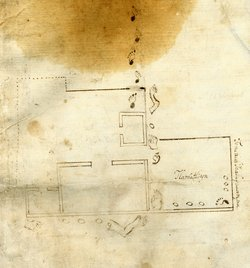Aunque manchado y dañado, este plan del testamento de Juan de la Cruz legando tierra a su esposa María de los Ángeles claramente indica el uso continuo de la escritura pictográfica nahua para registrar información, especialmente documentos legales relacionados con la propiedad. Brazos, manos y el corazón combinados con puntos indican las dimensiones de la propiedad; las huellas de los pies marcan derroteros de movimiento. Hay dos glosas informativas en náhuatl: Tlama[n]tliyn, una referencia a “algo que se está dando”, y Tonatiuh Icalaquianpa[n] que significa “oeste”.
Newberry Library: Vault Ayer 1801 Map 1

Este documento legal registra la resolución de una disputa del uso de la tierra entre agricultores indígenas de Tultepec y el ranchero Juan Antonio Covarrubias. Como resultado de esta demanda, el área marcada en rojo y por los mojones estaba restringida para uso de ganado; el área fuera del área roja estaba destinada para tierra de cultivo. La iglesia más grande, Santa María Nativitas, señala a Tultepec, y pequeñas iglesias marcan pueblos secundarios. Los edificios pequeños son casas indígenas y la gran estructura al lado izquierdo superior es la finca de Covarrubias. El documento está escrito en español y la pintura está hecha en papel europeo pegado sobre amatl.
Newberry Library: Ayer MS 1801 Map 2

Este mapa probablemente acompañaba una litigación registrada entre comunidades indígenas locales acerca de la venta de una propiedad a un español y el problema de la posesión y uso del lago Xaltocan para irrigación. Zanjas de irrigación ("asequias") se destacan en este mapa en el cual la tercera parte inferior es "tierras de los yndios" y casas de estilo nativo rodean el plano cuadriculado del pueblo de San Francisco [Tenopalco] marcado por su iglesia. A la derecha, cruces marcan los límites de la tierra indígena clasificada "valdios". A la izquierda está representado Cristóbal Rodríguez, su gran hacienda está arriba. La glosa al lado de su cabeza dice “la parte donde se piden las tierras. Savana grande”.
Newberry Library: Vault oversize Ayer MS 1903
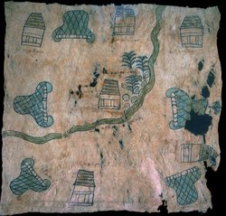Este mapa combina métodos indígenas de comunicar información con formas no indígenas de representación. Símbolos tradicionales de lugar en forma de montañas (tepetl) alternan con casas cubiertas por paja (xacalli) alrededor del borde del mapa. Una banda ondulada curvando de arriba hacia la izquierda sugiere un río, aunque no se incluye ninguna señal de agua; “rocas” irregulares y abetos están al lado de una casa junto al “río”. Entre las glosas ilegibles debajo de la mayoría de las casas y los signos de montaña, pueblo [p°] puede verse tenuemente. El estilo indígena de las rocas, árboles y el agua sugiere una fecha tardía o un artista no completamente versado en pictogramas indígenas.
Newberry Library: Vault oversize Ayer MS 1906

Este mapa del distrito minero de la región de Temascaltepec (centro de México) fue probablemente compuesto para los españoles Luis de León y Miguel Luis de Acevedo como parte de su petición legal para tomar posesión de dos propiedades a la derecha (señaladas por casas; el pedido de los españoles está registrado en el mapa). Iglesias marcan los pueblos cercanos de San Martín, San Miguel Yxtapan y Santa María. Sin embargo, algunos pictogramas en estilo indígena son empleados para representar rasgos importantes del paisaje. Las minas están señaladas abajo a la izquierda, herramientas de cobre con forma de pala se encuentran en el centro del mapa y las dos casas indígenas a la izquierda son refinerías de mineral. Otros rasgos como montañas y cerros, esteros con líneas onduladas y remolinos y caminos con huellas de pies son fácilmente reconocibles.
Newberry Library: Ayer MS 1476

Tres veces al año, los indígenas de Cuitlahauc tenían la obligación de pagar tributos a su señor español, Alonso de Cuevas. Este recibo, escrito en pictogramas, náhuatl y español alfabético, verifica la cantidad pagada; 115 pesos y 5 tomines. Esta cantidad está representada por cinco grandes bultos rosados cada uno con una bandera encima que significa 20 (5x20=100 pesos); tres bultos más pequeños azules de cinco son quince pesos; un disco marcado cuatro más un disco simple son 5 tomines que completan el pago.
Newberry Library: Vault Ayer MS 1481 b (1f)
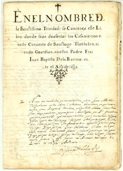Sacramentos importantes en la vida de los indígenas eran usualmente registrados en su lenguaje natal, náhuatl. Estas páginas contienen una lista de matrimonios del monasterio de Santiago de Tlatelolco, Cuidad de México. Estos registros están fechados desde 1632 hasta 1633.
Newberry Library: Vault Ayer MS 1491
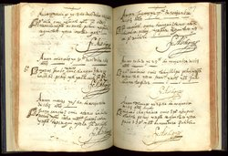Este pequeño libro conmovedor anota las muertes y entierros entre el 3 de febrero de 1605 y el 31 de agosto de 1642 en Tepejí del Río (Hidalgo, México). Las mujeres están indicadas por cabezas con pelo trenzado enrollado alrededor; los hombres están indicados mediante cabezas con cabello corto y oscuro. Entre las anotaciones de 1613 están Pedronilla (domingo, 13 de octubre); Marcos Jacobo (miércoles, 10 de octubre); Juana Sánchez (martes, 5 de noviembre); Julio Cacalotl (jueves, 7 de noviembre); Alonso (sábado, 23 de noviembre); y Miguel Chachalaca (domingo, 14 de noviembre), todos firmados por Alonso de Paz, padre de la parroquia.
Newberry Library: Vault Ayer MS 1481 F3 a&b

En 1570, a sugerencia de los Frailes Miguel Navarro y Jerónimo de Mendieta, los líderes indígenas de la Ciudad de México y Texcoco se pusieron de acuerdo para escribir una carta al Rey Felipe II quejándose de sus condiciones de vida y el maltratamiento que recibían de los españoles. Dos frailes planeaban llevar la carta a España, pero no la recibieron a tiempo. Al regresar de España a México en 1572, ellos la encontraron en posesión del padre Alonso de Molina.
Newberry Library: Ayer MS 1884 Doc 14
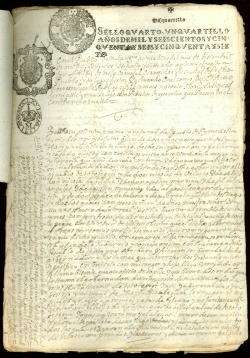En 1667 el tlatoani (gobernador indígena) de Tototepeque, Agustín Tolentino, fue al pueblo de Santa Inés, alegando que Tototepeque era la cabecera. El ordenó que Baltasar Solitutu fuera brutalmente azotado por rehusarse a aparecer cuando le mandó a llamar. Santa Inés no se consideraba subordinada a Tototepeque. Cuando Solitutu demandó a sus atacantes, el gobernador de San Agustín Tenango escribió una carta de apoyo al corregidor Don Andrés de Trejo Caruajal, él cual falló en contra de Tolentino. Un intérprete del juzgado tradujo la carta del náhuatl al español para el expediente legal.
Newberry Library: Vault Ayer MS 1162b
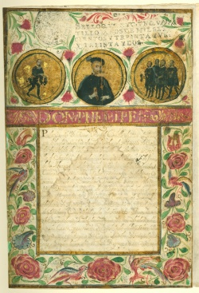Como los conquistadores españoles que habían servido al rey español en la conquista de México, los tlascaltecas pidieron privilegios del rey en reconocimiento de sus servicios como aliados de Hernán Cortés. A lo largo de los siglos siguientes, los tlascaltecas, continuaron luchando para mantener su estatus, recordando a la corona de su lealtad y méritos al ayudar a los españoles.
Documentos de tierra del siglo XVIII
En los siglos XVI y XVII, epidemias mortales y concentraciones forzadas de poblaciones dispersas de indígenas (congregación) creó lo que se llamaba tierras “vacías”. Las consecuentes demandas de propiedad de la tierra a finales del siglo XVII y principios del siglo XVIII hicieron necesaria la legalización de títulos de la propiedad (composición) desde alrededor de 1650 hasta 1750. Como respuesta a este reto, las comunidades indígenas hicieron títulos para documentar su propiedad. Producidos como documentos legales, estos documentos de propiedad están escritos en náhuatl y hacían amplio uso de imágenes pictográficas que referían a la antigua propiedad ancestral de las tierras en cuestión. El grupo de estos documentos del valle de México llamado techialoyan son reconocidos por su uso de amatl y el estilo literario arcaico del náhuatl.
Newberry Library: Vault oversize Ayer MS 1907

Las dos grandes pirámides precolombinas de Teotihuacan son monumentos significativos en esta disputa de límites del siglo XVIII entre indígenas de San Francisco Mazapan y una comunidad indígena vecina. La Calle de los Muertos en Teotihuacan está hacia la parte inferior del mapa. El monte verde a la izquierda inferior representa la Pirámide de la Luna; una Pirámide del Sol verde invertida está en el centro de la calle. Después de la caída de Teotihuacan (ca. 650), los indígenas continuaron viviendo bajo la sombra de la pirámide. Referencias explícitas al pasado a través de los pictogramas, el náhuatl, y los hombres con vestidos antiguos transmitía un aura de validez y credibilidad en casos legales de este tipo.
Newberry Library: Vault Ayer MS 1472
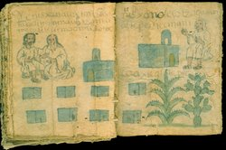Un mapa techialoyan, el Códice Zempoala describe la tierra y registra los nombres, la superficie en acres, y los límites de los distritos de los pueblos. Se representan las iglesias, ayuntamientos, y casa de pagadores de tributos. También se muestran las cosechas principales cultivadas en el área: la planta del maguey y nopal. La página izquierda de este documento alude a los orígenes prehispánicos de la propiedad a través de la montaña (Tzinquilocantepetl) que constituía la frontera e Ixtlilxochitl, ancestro regio y aliado de Cortés. A la derecha se encuentran representados el noble y gobernador Tecpancacaltzin y su hijo Xilomantzin.
Newberry Library: Vault Ayer MS 1479
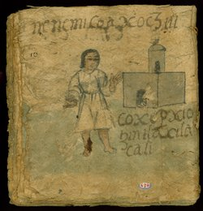Esta página del Códice Tepotzotlan, un manuscrito techialoyan, representa una sección de los terrenos y las casas de quienes pagaban tributos, además de su cultivo más importante, el maguey. El texto indica el nombre del barrio y uno de sus rasgos naturales distintivos, “Hay muchas flores coaxochitl en el barrio de la Concepción”.
Cochinilla
La cochinilla es un tinte brillante carmesí o color de chile rojo producido del insecto cochinilla—los europeos inicialmente pensaron que los insectos eran semillas (grana). Los aztecas usaban el tinte para colorear ropa y pintar libros, el cual crecía y se cultivaba en las pencas del nopal. Durante el periodo colonial, la cochinilla se convirtió en una fuente de gran riqueza mientras florecía la demanda europea de la tela tinturada con la cochinilla. Los españoles mantuvieron un monopolio del tinte hasta finales de siglo XVIII, cuando los insectos fueron contrabandeados fuera de México. La cochinilla es comúnmente utilizada hoy en día como colorante de comida y maquillaje.
Newberry Library: Vault Ayer MS 1106 D8 Box 1 Folder 15

Esta compilación de informes sobre Nueva España y Perú incluye una descripción del cultivo y preparación de la cochinilla. Aquí, dos indígenas cosechan los insectos de la cochinilla de las pencas de un enorme nopal, raspándolas en un tazón especial. Los dos visten ropa con franjas y tonos rojos. La mujer está vestida en una túnica indígena (huipil) y se hinca de manera tradicional.
Newberry Library: Vault Ayer MS 2178

En este libro, doce grandes escenas de acuarela ilustran el ciclo anual de plantación, cultivo y cosecha del nopal. En marzo y abril, los insectos de la cochinilla son colocados en nuevas plantas de cactus para desarrollarse; en agosto y septiembre son cosechados. El ciclo comienza de nuevo con el podar y replantar de los nopales en diciembre. El edificio parecido a un templo arriba de las dos escenas alude al cultivo de la cochinilla en la antigüedad indígena.
Newberry Library: Vault Ayer MS 1031
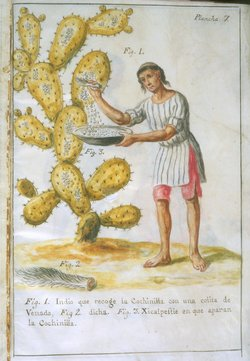En la ilustración 7, un hombre (figura 1) vestido en una túnica blanca con rayas azules y pantalones pintados con el tinte de la cochinilla raspa los escarabajos del nopal utilizando una cola de venado. Figura 2 representa una cola de venado y figura 3 la vasija hecha de calabaza seca en la cual se juntaba la cochinilla (“Xicalpestle en que aparan la Cochinilla”).
La ilustración 9 muestra el paso siguiente en el proceso. Después de quitar las cochinillas del nopal, se mata a los insectos en un baño de vapor tradicional (figura 1 temascale, o baño de los Indios). Figura 2 da una perspectiva más detallada del baño de vapor.
Newberry Library: Vault folio Case MS 5011

El historiador nahua Domingo Francisco de San Antón Muñón Chimalpahin Cuauhtlehuanitzin editó la Conquista de México de Francisco López de Gómara en el proceso de componer su propia historia indígena de México. Según la historiadora Susan Schroeder, las escrituras de Chimalpahin “constituyen la historia narrativa más exhaustiva y completa del México indígena (50 E.C.–1631) en cualquier lenguaje por un autor indígena conocido”.
En la página reproducida, Chimalpahin modifica el texto de Gómara, nombrando a Malintzin, la famosa intérprete de Cortés, con el título honorífico “Tenepal”. En contraste, Gómara solamente se refería a ella como Marina.
Newberry Library: Ayer MS 1481 a2
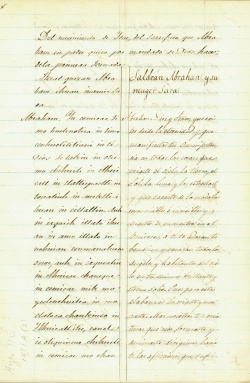Esta obra de teatro nahua sobre Abrahán y el sacrificio de Isaac adapta un tema tradicional de la historia sagrada cristiana para una audiencia nahua-hablante. El tema de la obediencia a Dios se presenta a través de la sumisión de Isaac a su padre y la voluntad de Abrahán de sacrificar a su hijo a petición de Dios. Aunque no es un tema central en la obra, el tratamiento del sacrificio humano posiblemente servía para recordar a una audiencia indígena la importancia de aceptar el cristianismo en los términos establecidos por la ley divina. Quizá más significativo incluso sea que esta obra muestre a través de la actuación de los personajes las formas apropiadas en que un nahua se puede dirigir a la divinidad o comportar de manera obediente a sus padres o los mandatos divinos.
Newberry Library: Ayer broadside PM4068.1 .I93 1755

Esta hoja individual contiene el Padrenuestro, Ave María, el Credo apostólico, Salve regina, los diez mandamientos, los cinco mandamientos de la iglesia, y los siete sacramentos en náhuatl. Fue impresa para que los indígenas y sacerdotes la compraran y exhibieran en una pared o en un altar. Los nombres de los sacramentos están en español, y otras palabras y frases en español también están incluidas.
Newberry Library: Vault Ayer MS 1168 Doc. 1 and 2
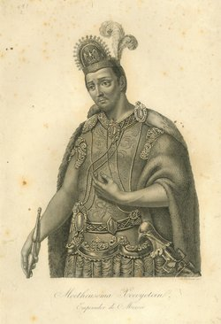Hacia fines de la década de 1880, José María Lizaula recopiló una serie de documentos fechados desde 1531 hasta 1885 para apoyar su derecho a la pensión concedida en 1590 por Felipe II a los descendientes directos del emperador Motecuhzoma Xocoyotzin. Entre sus documentos, incluyó una copia de una genealogía de Motecuhzoma supuestamente hecha en el siglo XVI, y este particularmente triste grabado del siglo XIX del Emperador Motecuhzoma. Eventualmente el reclamo de Lizaula fue rechazado por la Suprema Corte de México y el Departamento del Tesoro.